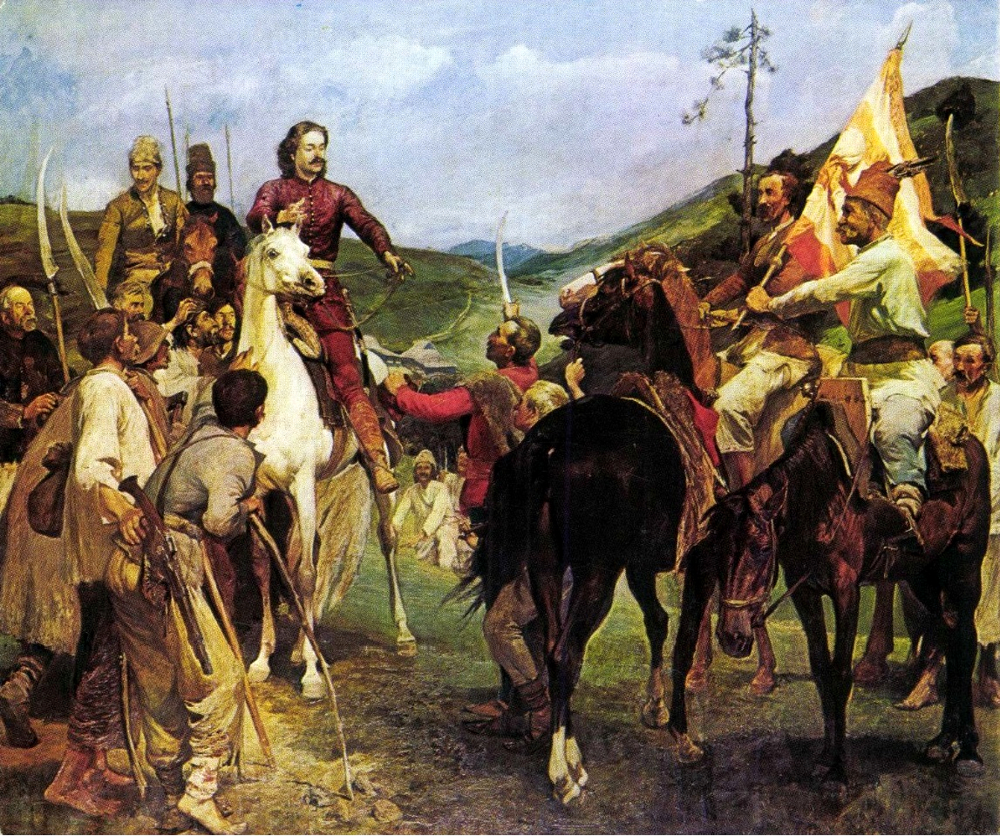

A Rákóczi-szabadságharc (1703–1711) az oszmán uralom alól felszabaduló Magyarország első jelentős szabadságharca volt a Habsburg abszolutizmus ellen.
1704 elején II. Rákóczi Ferenc az 1703. június 7-ére keltezett manifesztumban tudósította a külföldi hatalmi érdekcsoportokat arról, hogy Magyarországon az állami önrendelkezésért fogott fegyvert az ország lakossága. A kiáltvány címe Universis orbis Christiani principibus et respublicis[1] volt. A II. Rákóczi Ferenc vezette küzdelem a rendi kiváltságok védelméért, az ország belső önállóságáért (maximális programként a Habsburg-monarchiából való kiválásért, vagyis az ország teljes függetlenségéért) folyt, és végül az egyenlőtlen erőviszonyok, a kedvezőtlenné váló európai politikai helyzet és az ország belső társadalmi ellentmondásai miatt bukott el. A bukás ellenére a szabadságharc megakadályozta Magyarország teljes beépítését a Habsburg Birodalomba, és az ország rendi alkotmánya, ha látszólagosan is, de fennmaradt.[2]
Rákóczi emigrációba kényszerült, de megkérdőjelezhetetlen nemzeti hőssé vált, aki követendő példakép maradt a magyarok szemében. A szabadságharc hatása megjelent a népzenében is, és olyan hatást gyakorolt, amiből számos kuruc nóta született. A Rákóczi-szabadságharc vezérlő fejedelmének születésnapja, március 27., 2015 óta nemzeti emléknap (Rákóczi-emléknap)
